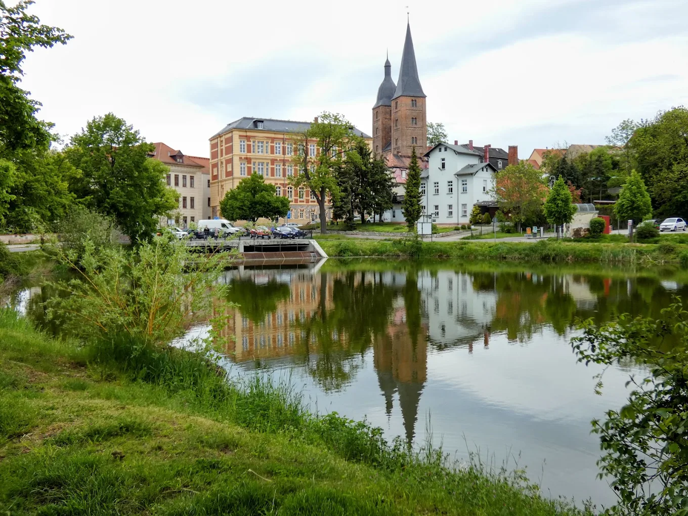
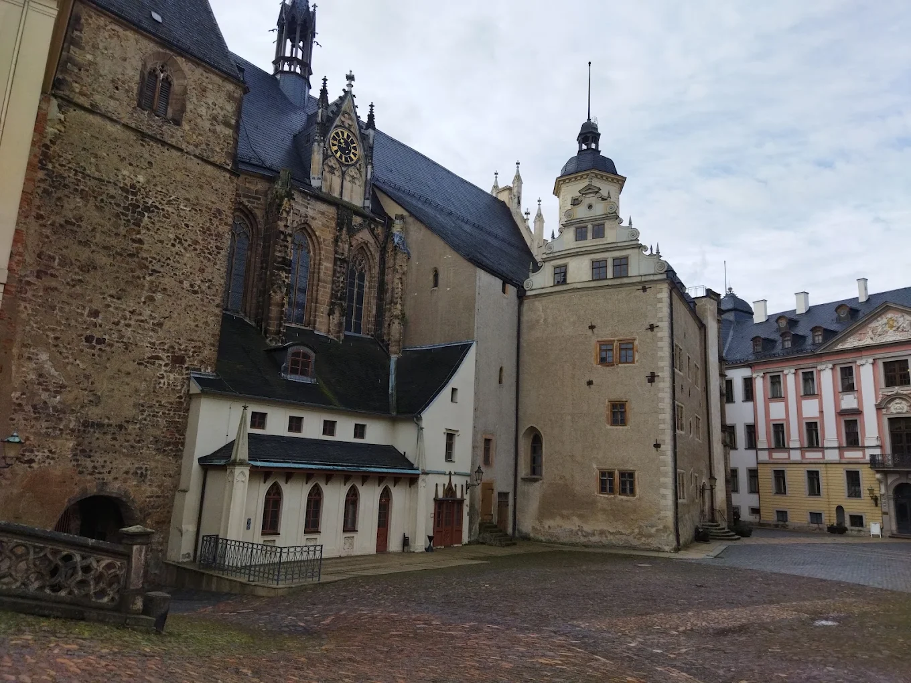

Ich bin direkt in Altenburg (04600) ansässig und erstelle professionelle Websites für Selbstständige, Handwerker und Kleinunternehmen — mit lokalem SEO, in 10 Werktagen live, ohne monatliche Agenturgebühren.

Viele Altenbürger Unternehmen haben schlechte Erfahrungen mit großen Agenturen gemacht: überhöhte Preise, Standardvorlagen, monatelange Wartezeiten. Das ist bei mir anders.
Ich lebe und arbeite in Altenburg (Pappelstraße 10, 04600). Ich kenne den lokalen Markt, die Konkurrenz in Ihrer Branche und was Altenburger Kunden bei Google wirklich eintippen. Dieses Wissen fließt direkt in Ihre Website.
Ob Friseur in der Innenstadt, Handwerksbetrieb im Gewerbegebiet oder freiberuflicher Berater — ich baue Websites, die bei Google in Altenburg und Umgebung gefunden werden und Besucher zu Kunden machen. Zusätzlich biete ich Lokales SEO für Altenburg an, um Ihre Sichtbarkeit weiter auszubauen.

Kein Template von der Stange. Ich gestalte Ihre Website so, dass sie zu Ihrer Marke, Ihren Farben und Ihrem Unternehmensstil passt — professionell und einzigartig.
Über 70 % der lokalen Suchanfragen kommen vom Smartphone. Ihre Website sieht auf jedem Gerät perfekt aus und lädt blitzschnell — wichtig für lokale Suchanfragen.
Ihre Website wird von Anfang an für lokale Suchanfragen wie „[Ihr Beruf] Altenburg" optimiert — Meta-Tags, Schema-Markup, Google Business Profile-Verknüpfung und lokale SEO-Grundlagen.
Optimierte Bilder, sauberer Code und Caching sorgen für Google PageSpeed 90+. Schnelle Seiten ranken besser und verlieren weniger Besucher vor dem ersten Klick.
Startseite, Über mich, Leistungen, Galerie, Referenzen, Kontakt und mehr — jede Seite so strukturiert, dass Besucher schnell finden was sie suchen und dann anfragen.
Nach dem Launch zeige ich Ihnen, wie Sie Texte und Bilder selbst pflegen können. Plus 30 Tage Nachbetreuung ohne Aufpreis — direkt aus Altenburg.
Eine schöne Website allein reicht nicht. Sie muss bei Google gefunden werden, Vertrauen aufbauen und den Besucher dazu bringen, Sie anzurufen oder anzuschreiben.
Jede Website, die ich für Altenbürger Kleinunternehmen baue, ist von Anfang an auf Conversions ausgelegt: klare Handlungsaufforderungen, lokale Vertrauenssignale und eine Seitenstruktur, die Google versteht.
Möchten Sie zusätzlich aktiv Kunden über Google gewinnen? Dann lesen Sie mehr über meine SEO-Dienstleistungen oder das Conversion-Rate-Optimierung-Paket.
Elektriker, Klempner, Maler, Dachdecker, Schreiner — eine professionelle Website bringt Anfragen aus dem Altenburger Land.
Friseure, Nagelstudios, Kosmetikerinnen, Massagepraxen, Fitnesstrainer in Altenburg und Umgebung.
Heilpraktiker, Physiotherapeuten, Pflegedienste, Tierärzte und medizinische Einrichtungen in der Region Altenburg.
Restaurants, Cafés, Bäckereien, Einzelhandel — Speisekarten, Öffnungszeiten und Angebot online zeigen.
Steuerberater, Rechtsanwälte, Unternehmensberater und Finanzdienstleister im Altenburger Land.
Nachhilfelehrer, Musikschulen, Tanzstudios, Sprachschulen und Kursanbieter in Altenburg.
Autowerkstätten, Taxiunternehmen, Umzugshelfer und Fahrdienste in der Region Altenburg–Leipzig.
Gartenbau, Landschaftspflege, Hausmeisterdienste und Reinigungsunternehmen im Altenburger Land.
Ihre Branche nicht dabei? Schreiben Sie mir — ich habe für fast jede Branche schon eine Website gebaut.
Wir sprechen 30 Minuten über Ihr Unternehmen, Ihre Zielkunden in Altenburg und was Ihre neue Website leisten soll. Per Telefon, Video oder persönlich in Altenburg.
Ich baue Ihre Website in einer Testumgebung. Sie können jeden Fortschritt begutachten, Änderungen anfragen und alles freigeben, bevor die Seite live geht.
On-Page-SEO für Altenburg-Keywords, Schema-Markup, Ladezeit-Optimierung, SSL, Google Analytics und Search Console — alles korrekt eingerichtet.
Ihre Website geht live. Ich zeige Ihnen wie Sie Inhalte selbst aktualisieren können und stehe die ersten 30 Tage für Fragen und Anpassungen ohne Aufpreis zur Verfügung.
| Merkmal | Vahid Sediqi | Große Agentur |
|---|---|---|
| Preis | Ab €750 Festpreis | €2.000 – €10.000+ |
| Ansprechpartner | Direkt aus Altenburg | Wechselnde Projektmanager |
| Lieferzeit | 8–12 Werktage | 4–16 Wochen |
| Lokale SEO-Kenntnisse | Altenburg & Region | Generisch, kein Ortsbezug |
| Design | Individuell nach Maß | Oft Standardvorlagen |
| Monatliche Kosten | Nur Hosting (€5–15/Mo.) | Pflegepauschale €100–500/Mo. |
Der Festpreis für eine professionelle WordPress-Website beträgt €750 — ohne versteckte Kosten oder monatliche Agenturgebühren. Enthalten sind individuelles Design, bis zu 8 Seiten, lokale SEO-Optimierung für Altenburg, Mobiloptimierung, SSL-Setup und 30 Tage Nachbetreuung. Dazu kommen nur Hosting-Kosten von ca. €5–15/Monat.
Absolut. WordPress ist das nutzerfreundlichste CMS der Welt — kein Programmieren nötig. Nach der Einweisung können Sie Texte, Fotos und Leistungen selbst aktualisieren. Ich zeige Ihnen alles in einer persönlichen Schulungssitzung, die auch in Altenburg vor Ort stattfinden kann.
Mit einer SEO-optimierten Website und Google Business Profile sehen viele meiner Kunden erste lokale Rankings in Altenburg innerhalb von 4–12 Wochen. Für schnellere Ergebnisse empfehle ich zusätzlich mein Lokales SEO Altenburg-Paket (€199–350/Monat), das aktiv an Ihrer Google-Sichtbarkeit arbeitet.
Ja. Ich bin in Altenburg ansässig (Pappelstraße 10, 04600) und biete persönliche Gespräche und Einweisungen vor Ort an. Viele Kunden bevorzugen auch bequeme Videotelefonate — das entscheiden wir gemeinsam beim ersten Gespräch.
Ja. Ich biete auch Website-Überarbeitungen an — SEO-Optimierung, Geschwindigkeit, Design. Ich schaue mir Ihre aktuelle Seite kostenlos an und sage Ihnen ehrlich, ob Überarbeitung oder Neubau sinnvoller ist. Schreiben Sie mir unter contact@vahidsediqi.com.
Für deutsche Unternehmen empfehle ich Hoster mit deutschen Rechenzentren: IONOS, Hetzner oder Hostinger DE. Server in Deutschland sorgen für DSGVO-Konformität und schnelle Ladezeiten für Besucher aus dem Altenburger Land. Ich helfe Ihnen bei der Einrichtung.
Ich bin direkt in Altenburg ansässig und beantworte Ihre Anfrage innerhalb von 24 Stunden mit einem konkreten Angebot — inklusive Designrichtung, Zeitplan und Festpreis. Kein Kleingedrucktes.
Oder rufen Sie an: +49 176 62521106 — Montag bis Freitag, 9–18 Uhr